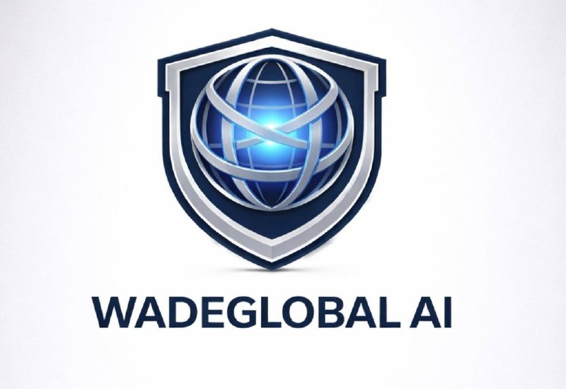

Lead Capture
Calls, forms, messages, social traffic, and website visits must enter one controlled intake path. If the lead is not captured cleanly, follow-up cannot work.
Where Vision Meets Execution
WadeGlobal AI helps owners understand what is breaking, what system should be installed first, and how AI, CRM, follow-up, voice agents, and reporting can turn attention into controlled execution.
Company and market
WadeGlobal AI was built by William Wade as the infrastructure engine behind practical AI systems, agents, automation, CRM, follow-up, and operating reliability. The first proving ground is service-business execution, with ACS validating the local/service lane and WADE validating brand authority and leadership-market infrastructure.
WGAI is built for service-business owners, founder-led teams, consultants, coaches, speakers, educators, and operators who are past random activity and ready to invest in infrastructure.

Education layer
The blueprint called for a site that educates before it sells. WGAI teaches the owner how demand becomes revenue, where the system breaks, and why visibility without routing is wasted demand.
Calls, forms, messages, social traffic, and website visits must enter one controlled intake path. If the lead is not captured cleanly, follow-up cannot work.
Most businesses do not lose because nobody is interested. They lose because response, proposal follow-up, nurture, and next actions are inconsistent.
CRM stages, team handoffs, onboarding, documentation, and alerts keep growth from becoming chaos once more people start coming in.
Implementation map
The original blueprint asked for implementation maps, guided routing, landing pages, voice assistance, lead capture, and CRM handoff. BPOS is the infrastructure layer that makes those pieces work together.
Automation blueprint
The blueprint is clear: forms, calls, audits, and bookings should not disappear into inboxes. They should create or update a CRM contact, tag the source, route the next step, trigger follow-up, and leave evidence that the system worked.
Website conversion path
The visitor sees what WGAI does, who it helps, and what business problem the systems solve.
They learn whether the first issue is missed calls, weak follow-up, CRM disorder, AI-search visibility, hiring, onboarding, or reporting.
The site collects structured information, routes it into CRM, and moves the prospect into the right next step.
Seven engines
WGAI BPOS must operate across Identity, Audience, Offer, Authority, Proof, Conversion, and Intelligence engines. The current site is being built toward that standard.
Company story, founder context, target markets, sectors, language, and brand consistency.
Offer architecture, resource hubs, FAQ, AI search, articles, schema, and answer-ready content.
Case-study structure, CRM routing, Avery, automation, scorecards, analytics, and reporting.
Operating layers
These are the system categories from the blueprints and current WGAI build direction. They should be educated on the site before a visitor reaches the form.
Lead-gen, follow-up, onboarding, visibility, operational flow, and practical AI support for the business.
Avery-style intake, qualification, routing, post-call summaries, transcripts, and CRM follow-up.
WGS/GHL pipelines, tags, custom fields, n8n orchestration, alerts, and reporting.
Local SEO and AI-search infrastructure for service businesses that need to get found and convert locally.
Entity, website, proof, content, schema, llms.txt, and AI-search readiness for brands that need wider reach.
Recruitment, screening, onboarding, and welcome systems that reduce manual drag.
Primary next step
The assessment decides what the business actually needs before anything is sold: lead capture, follow-up, CRM, AI agents, LocalPresenceOS, BrandPresenceOS, onboarding, or reporting.